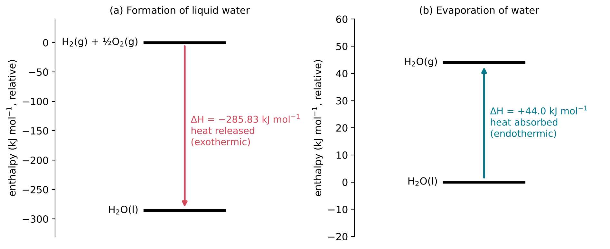
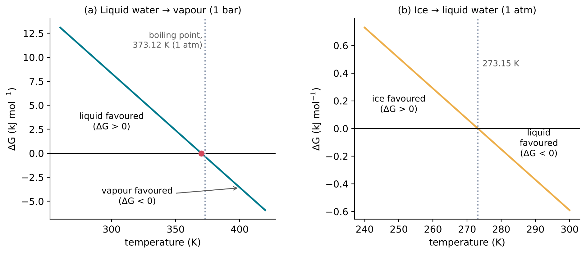
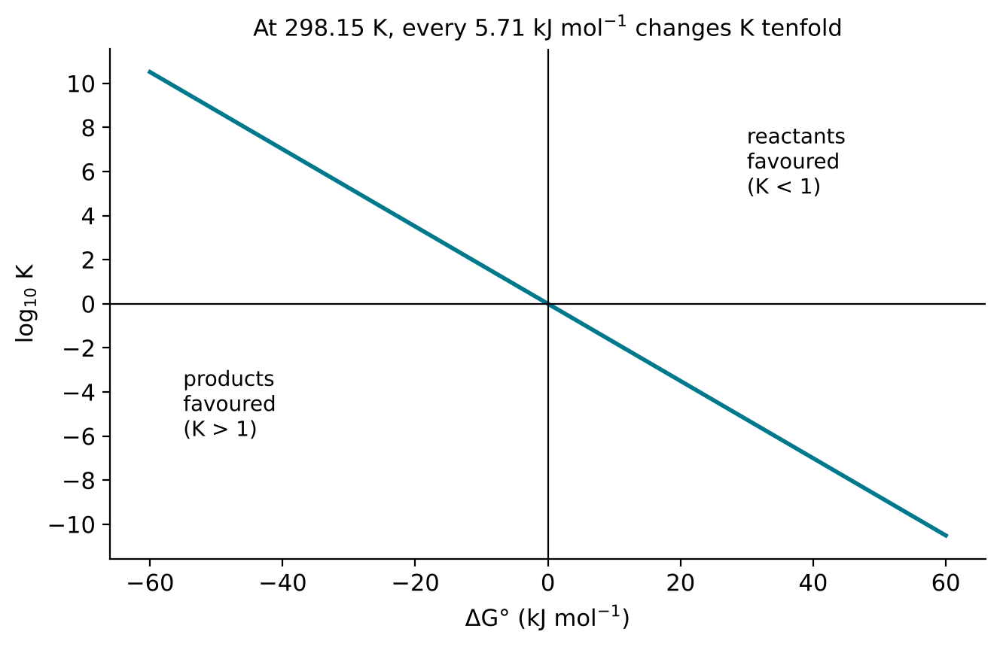
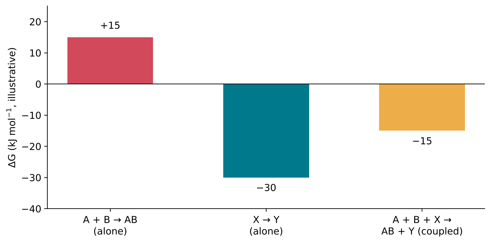

9 Energy and the Direction of Change
The question of this chapter
Some changes happen of their own accord and others never do. Water left in an open dish evaporates; a mixture of hydrogen and oxygen, once ignited, turns into water; but water never separates by itself into hydrogen and oxygen, and the evaporated water does not return to the dish. This chapter asks: what decides the direction in which a change can go? The answer involves two quantities, enthalpy and entropy, which combine into a third, the Gibbs energy. The Gibbs energy also explains the size of the equilibrium constant met in Chapter 8, and why joining building blocks into chains in water needs a source of energy.
9.1 Energy, heat and temperature
Energy and its units
Energy is the capacity to do work or to supply heat. It takes several forms. Kinetic energy is the energy of motion. Potential energy is energy stored in the positions of objects that attract or repel each other, such as a raised weight in the field of the Earth, or electrons and nuclei in the electric field of their charges. The chemical energy of a substance is the potential and kinetic energy of its electrons and nuclei, and it changes when bonds are broken and formed.
The SI unit of energy is the joule (J), equal to 1 kg m2 s−2 (Bureau International des Poids et Mesures 2019). Chemical energies are usually given per mole of reaction, in kilojoules per mole (kJ mol−1). Older literature and food labels use the calorie; the thermochemical calorie is defined as exactly 4.184 J (Thompson and Taylor 2008), and the “Calorie” of nutrition labels is a kilocalorie.
The first law of thermodynamics states that energy is conserved: it can be transferred from one body to another and converted from one form into another, but it is neither created nor destroyed. When a reaction releases energy, that energy is not new; it was stored in the reactants and is passed to the surroundings, usually as heat.
Heat and temperature are not the same
Heat is energy transferred from one body to another because of a difference in temperature. Temperature is a measure of how vigorously the particles of a body move. In a gas, the average kinetic energy of the molecules moving from place to place is proportional to the absolute temperature. A bathtub of warm water and a cup of water at the same temperature have the same temperature but very different amounts of thermal energy, because the bathtub contains far more molecules.
The energy of thermal motion per particle is of the order of kBT, where kB is the Boltzmann constant, exactly 1.380 649 × 10−23 J K−1 (Bureau International des Poids et Mesures 2019). Per mole of particles the corresponding quantity is RT, where R is the molar gas constant, 8.314 462 618 J K−1 mol−1 (National Institute of Standards and Technology, n.d.-a). At 25 °C (298.15 K), RT = 2.479 kJ mol−1. This number is a useful yardstick. Energies of a few kJ mol−1 are comparable with thermal motion and are easily supplied or overcome by collisions; energies of hundreds of kJ mol−1, typical of covalent bonds, are not.
9.2 Enthalpy: the heat of a reaction
Exothermic and endothermic
Most chemical reactions are carried out at constant pressure, open to the atmosphere. The heat exchanged with the surroundings under these conditions is equal to the change in a quantity called enthalpy, H. Only changes in enthalpy, ΔH, can be measured, not absolute values. A reaction that releases heat to its surroundings has ΔH < 0 and is called exothermic; one that absorbs heat has ΔH > 0 and is called endothermic (Figure 9.1).

Bonds and enthalpy
Breaking a chemical bond always requires energy, and forming one always releases energy. The energy needed to break one mole of a given bond in the gas phase is its bond enthalpy (Chapter 3, Table 3.2). A reaction is exothermic when the bonds formed in the products are, in total, stronger than the bonds broken in the reactants, and endothermic when they are weaker. The very strong triple bond of N2, 945.4 kJ mol−1, explains why nitrogen gas, which makes up most of the air, reacts so reluctantly: any reaction of N2 must begin by breaking it.
Enthalpies of formation and Hess’s law
Enthalpy changes are tabulated as standard enthalpies of formation, ΔfH°: the enthalpy change when one mole of a compound is formed from its elements in their most stable forms, with all substances in their standard states. The degree sign ° marks a standard value. For gases, the standard state is a pressure of 1 bar; for dissolved substances, a concentration of 1 mol L−1; tables usually refer to 298.15 K. By definition, ΔfH° of an element in its most stable form, such as H2(g) or O2(g), is zero.
Enthalpy is a state function: its value depends only on the present state of a system, not on how that state was reached. It follows that the enthalpy change of a reaction is the same whether the reaction occurs in one step or in several, and that it can be calculated from enthalpies of formation:
\[ \Delta H^\circ = \sum \Delta_{\mathrm{f}}H^\circ(\text{products}) - \sum \Delta_{\mathrm{f}}H^\circ(\text{reactants}) \]
each multiplied by its coefficient in the equation. This rule is Hess’s law. As an example, consider the burning of methane, the main component of natural gas:
\[ \mathrm{CH_4(g)} + 2\,\mathrm{O_2(g)} \rightarrow \mathrm{CO_2(g)} + 2\,\mathrm{H_2O(l)} \]
With ΔfH° = −74.87 kJ mol−1 for methane (Chase 1998), −393.51 kJ mol−1 for carbon dioxide and −285.830 kJ mol−1 for liquid water (Cox et al. 1984),
\[ \Delta H^\circ = [-393.51 + 2(-285.830)] - [-74.87 + 0] = -890.30\ \mathrm{kJ\,mol^{-1}} \]
The reaction releases about 890 kJ of heat for each mole (16 g) of methane burned.
9.3 Entropy: the number of arrangements
Heat alone does not decide
If the release of heat were the only thing that mattered, endothermic changes would never happen of their own accord. Yet they do. Water evaporates from a dish at room temperature, absorbing heat from its surroundings; ice melts in a warm room, absorbing heat. A second quantity is needed to explain the direction of change.
What entropy measures
Entropy, S, is a measure of the number of microscopic arrangements of a system’s particles and energy that are consistent with what is observed on the large scale. A state that can be realised in many ways has a high entropy; one that can be realised in few ways has a low entropy. Some general trends follow:
- A gas has a much higher entropy than the liquid from which it forms, because its molecules move freely through a much larger volume. The standard molar entropy of water vapour is 188.835 J K−1 mol−1, and that of liquid water 69.95 J K−1 mol−1 (National Institute of Standards and Technology, n.d.-b; Cox et al. 1984).
- A liquid has a higher entropy than its solid, in which the particles are held in fixed positions.
- Entropy increases with temperature, because the particles can share a larger amount of energy in more ways.
- A reaction that increases the number of independent particles, especially of gas molecules, usually increases entropy; one that joins particles together, such as the joining of two building blocks into one, usually decreases it.
Entropy has units of energy divided by temperature, J K−1, or J K−1 mol−1 for one mole.
The second law
The second law of thermodynamics states that in any spontaneous change, the total entropy of a system and its surroundings increases. The word spontaneous here has a technical meaning: a spontaneous change is one that can happen without being driven from outside. It says nothing about speed. A spontaneous change may be fast, like the neutralisation of an acid by a base, or so slow that it is never observed, as Section 9.7 shows.
The second law refers to the total entropy. The entropy of a system can decrease, as when water freezes into ordered ice, provided that the entropy of the surroundings increases by more. Freezing releases heat, and heat flowing into the surroundings increases their entropy. When an amount of heat q flows into surroundings at absolute temperature T, their entropy increases by q/T. The same amount of heat therefore increases entropy more when the surroundings are cold than when they are hot, and this is why water freezes below 0 °C but not above.
9.4 Gibbs energy: one quantity for both
Definition
Keeping track of the entropy of the surroundings is inconvenient. For a change at constant temperature and pressure, it can be replaced by a quantity that refers only to the system: the Gibbs energy (also called the Gibbs free energy), G, named after the American physicist Josiah Willard Gibbs. Its change is
\[ \Delta G = \Delta H - T\Delta S \]
where T is the absolute temperature. The link to the second law is as follows. At constant pressure, the heat released into the surroundings is −ΔH, so their entropy changes by −ΔH/T, while the entropy of the system changes by ΔS. The total entropy change is therefore ΔS − ΔH/T, and multiplying by −T gives exactly ΔH − TΔS = ΔG. A decrease in the Gibbs energy of the system thus corresponds to an increase in the total entropy, and the second law takes a simple form:
- If ΔG < 0, the change is spontaneous: it can occur of its own accord.
- If ΔG > 0, the change is not spontaneous; the reverse change is.
- If ΔG = 0, the system is at equilibrium.
A change with ΔG < 0 is also described as favourable or exergonic, and one with ΔG > 0 as unfavourable or endergonic.
Four combinations
Since ΔH and ΔS can each be positive or negative, there are four cases (Table 9.1).
| ΔH | ΔS | ΔG = ΔH − TΔS | Example |
|---|---|---|---|
| − (releases heat) | + (more arrangements) | negative at all temperatures | decomposition of hydrogen peroxide into water and oxygen gas |
| + (absorbs heat) | − (fewer arrangements) | positive at all temperatures | the reverse: water and oxygen forming hydrogen peroxide |
| − | − | negative at low temperature, positive at high | freezing of water; many reactions that join two molecules into one |
| + | + | positive at low temperature, negative at high | melting of ice; evaporation of water |
Two worked examples: water changing state
For the evaporation of one mole of liquid water at 298.15 K and 1 bar, the standard values give
\[ \Delta H = -241.826 - (-285.830) = +44.004\ \mathrm{kJ\,mol^{-1}}, \qquad \Delta S = 188.835 - 69.95 = +118.89\ \mathrm{J\,K^{-1}\,mol^{-1}} \]
using ΔfH° = −241.826 kJ mol−1 for water vapour (National Institute of Standards and Technology, n.d.-b; Cox et al. 1984). Before the two terms are combined, ΔS must be converted to kJ K−1 mol−1 (118.89 J = 0.11889 kJ):
\[ \Delta G = 44.004 - 298.15 \times 0.11889 = +8.56\ \mathrm{kJ\,mol^{-1}} \]
ΔG is positive: at 25 °C, liquid water does not turn into vapour at a pressure of 1 bar. (Water in an open dish evaporates nonetheless, because the pressure of water vapour in ordinary air is far below 1 bar; Section 9.5 shows how ΔG depends on the amounts present.) The enthalpy term favours the liquid, the entropy term favours the vapour, and the entropy term grows with temperature. The two balance, ΔG = 0, when T = ΔH/ΔS = 44 004 / 118.89 \(\approx\) 370 K (Figure 9.2 a). This estimate assumes that ΔH and ΔS do not change with temperature, and it comes within 3 K of the boiling point of water at 1 atmosphere, 373.12 K (99.97 °C on the present international temperature scale, calculated from the international reference formulation for water (Wagner and Pruß 2002)).
The melting of ice follows the same pattern on a smaller scale. At 0 °C and 1 atmosphere, melting absorbs 6.01 kJ mol−1 and increases the entropy by 22.0 J K−1 mol−1 (values calculated from the international reference formulations for ice and liquid water (Feistel and Wagner 2006; Wagner and Pruß 2002)). Below 273.15 K the enthalpy term wins and ice is stable; above it the entropy term wins and the ice melts (Figure 9.2 b). At the melting point itself, ΔG = 0 and ice and water coexist at equilibrium.

9.5 Gibbs energy and equilibrium
The standard Gibbs energy and K
The Gibbs energy change of a reaction depends on the amounts of reactants and products present. The standard Gibbs energy change, ΔG°, refers to the reaction with every substance in its standard state, for example every dissolved substance at 1 mol L−1. It is a fixed number for each reaction at a given temperature, and it is related to the equilibrium constant of Chapter 8 by
\[ \Delta G^\circ = -RT \ln K \tag{9.1}\]
where ln is the natural logarithm (Chapter 1). Rearranged, K = e−ΔG°/RT. A negative ΔG° gives K > 1, so the products are favoured at equilibrium; a positive ΔG° gives K < 1.
Because K depends exponentially on ΔG°, modest differences in energy produce large differences in K. At 298.15 K, RT ln 10 = 5.71 kJ mol−1, so every 5.71 kJ mol−1 of ΔG° changes K by a factor of ten (Figure 9.3). Table 9.2 gives some values.
| ΔG° (kJ mol−1) | K at 298.15 K |
|---|---|
| −40 | 1.0 × 107 |
| −20 | 3.2 × 103 |
| −10 | 56 |
| 0 | 1 |
| +10 | 0.018 |
| +20 | 3.1 × 10−4 |
| +40 | 9.8 × 10−8 |

Away from equilibrium: the reaction quotient
When a reaction mixture is not at equilibrium, the ratio of products to reactants, written in the same form as K but with the actual concentrations, is called the reaction quotient, Q. The Gibbs energy change under these actual conditions is
\[ \Delta G = \Delta G^\circ + RT \ln Q \]
This equation states three things. If Q < K, ΔG is negative and the reaction proceeds forwards, making more product. If Q > K, ΔG is positive and the reaction proceeds backwards. If Q = K, ΔG = 0 and the mixture is at equilibrium. A reaction with a positive ΔG° can therefore still proceed, if the products are kept at low concentration or the reactants at high concentration, because a small Q makes RT ln Q large and negative. This is the quantitative form of Le Chatelier’s principle (Chapter 8): adding reactant or removing product lowers Q and drives the reaction forwards.
Why water favours hydrolysis
Chapters 7 and 8 showed that a condensation in water, A + B \(\rightleftharpoons\) AB + H2O, is held back by the large excess of water. In the language of this chapter, the standard Gibbs energy change of such a condensation, with water as the solvent, is positive for many of the links found in living molecules; the reverse reaction, hydrolysis, is favourable. The equilibrium mixture therefore contains mostly separate building blocks, and dilution makes the situation worse, because the amount of joined product at equilibrium is proportional to the concentration of the partners ([AB]/[A] = K[B], Chapter 8). To make chains, either the water must be removed, so that the solvent no longer pushes the equilibrium back, or the joining must be paid for with Gibbs energy from another source, as described in Section 9.6.
How temperature changes K
Combining Equation 9.1 with ΔG° = ΔH° − TΔS° and dividing by −RT gives
\[ \ln K = -\frac{\Delta H^\circ}{RT} + \frac{\Delta S^\circ}{R} \]
If ΔH° and ΔS° change little with temperature, the second term is constant, and the effect of temperature is carried by the first term. For an exothermic reaction (ΔH° < 0), the first term is positive and becomes smaller as T increases, so K decreases on heating: the equilibrium shifts towards the reactants. For an endothermic reaction (ΔH° > 0), K increases on heating. This is the explanation promised in Chapter 8 for the rule that raising the temperature favours the direction that absorbs heat. The relation is known as the van ’t Hoff equation, after the Dutch chemist Jacobus Henricus van ’t Hoff.
9.6 Driving unfavourable reactions
Coupling
An unfavourable reaction can still take place if it is linked to a favourable one in such a way that the two occur together as a single overall process. Because Gibbs energy is a state function, the Gibbs energy changes of the two steps add. If a reaction A + B → AB has ΔG = +15 kJ mol−1 and another reaction X → Y has ΔG = −30 kJ mol−1, a combined process A + B + X → AB + Y has ΔG = −15 kJ mol−1 and is favourable (Figure 9.4). This is called coupling.
Coupling is not achieved by simply mixing the two reactions in one vessel. The two must share a common step or intermediate. Typically, X reacts first with A to form a high-energy intermediate, and this intermediate then reacts with B to give AB, releasing Y. The favourable reaction pays for the unfavourable one only through this shared chemistry.

Activated building blocks
A molecule that carries a built-in source of Gibbs energy, ready to be released in a coupled reaction, is called activated. In living cells, the most common example is adenosine triphosphate (ATP). Its chain of three phosphate groups is linked by P–O–P bonds, called phosphoanhydride bonds, whose hydrolysis is strongly favourable. Cells use the transfer of a phosphate group from ATP to drive many reactions that would otherwise be unfavourable, including the joining of building blocks into the chains of RNA and proteins. The building blocks that cells join into RNA are themselves activated in this way: each arrives carrying a chain of three phosphates, and the release of two of them pays for the new link.
On the early Earth, before cells existed, any joining of building blocks in water needed a comparable source of Gibbs energy. Possible sources include chemically activated molecules formed in the environment, the removal of water by drying, and the input of energy from sunlight, heat or chemical gradients. Which of these could have operated is one of the central questions in research on the origin of life.
9.7 Favourable is not the same as fast
The formation of liquid water from its elements,
\[ \mathrm{H_2(g)} + \tfrac{1}{2}\,\mathrm{O_2(g)} \rightarrow \mathrm{H_2O(l)} \]
has ΔH° = −285.830 kJ mol−1 and ΔS° = 69.95 − 130.680 − ½(205.152) = −163.31 J K−1 mol−1 (National Institute of Standards and Technology, n.d.-b; Cox et al. 1984). At 298.15 K,
\[ \Delta G^\circ = -285.830 + 298.15 \times 0.16331 = -237.14\ \mathrm{kJ\,mol^{-1}} \]
The reaction is strongly favourable. Yet a mixture of hydrogen and oxygen can be kept at room temperature for a very long time without reacting appreciably, until a spark ignites it. Thermodynamics says whether a change can happen and how far it will go; it says nothing about how fast. The hydrolysis of RNA in water is another example: it is favourable, yet a chain of RNA survives in pure water for long enough to be studied, because the reaction is slow. Speed is the subject of the next chapter.
Key points
- Energy is conserved (first law). Chemical energies are given in kJ mol−1; at 25 °C the thermal energy per mole, RT, is 2.479 kJ mol−1.
- Enthalpy change, ΔH, is the heat exchanged at constant pressure: negative for exothermic, positive for endothermic reactions. Hess’s law gives ΔH° of a reaction from enthalpies of formation.
- Entropy, S, measures the number of microscopic arrangements. The total entropy increases in every spontaneous change (second law).
- The Gibbs energy change, ΔG = ΔH − TΔS, decides direction at constant temperature and pressure: ΔG < 0 spontaneous, ΔG > 0 not, ΔG = 0 equilibrium.
- ΔG° = −RT ln K: at 25 °C, every 5.71 kJ mol−1 changes K tenfold. Under actual conditions ΔG = ΔG° + RT ln Q.
- Heating lowers K of an exothermic reaction and raises K of an endothermic one.
- Unfavourable reactions can be driven by coupling to favourable ones through a shared intermediate; activated molecules such as ATP serve this purpose in cells.
- A favourable reaction can be extremely slow: thermodynamics gives direction, not speed.
Self-test
- Use the standard enthalpies of formation in this chapter to calculate ΔH° for H2O(g) → H2O(l). Is condensation of water vapour exothermic or endothermic?
- A reaction has ΔH = +20 kJ mol−1 and ΔS = +100 J K−1 mol−1. Is it spontaneous at 25 °C (298.15 K)? Above what temperature does it become spontaneous, assuming ΔH and ΔS are constant?
- A reaction has ΔG° = −11.4 kJ mol−1 at 298.15 K. Without a calculator, estimate K. (Hint: use the 5.71 kJ mol−1 rule.)
- A reaction has K = 10 and is started with Q = 1000. In which direction does it proceed? What is the sign of ΔG?
- Explain, using the four cases of Table 9.1, why joining two building blocks into one tends to become less favourable as the temperature rises, if the joining releases heat.